TAKE ME WITH YOU
개발자 스스로를 상품화하여 'Buy me!' 마케팅을 위해
제작된 팀프로젝트 반응형 홈페이지입니다.
[TONE & MOOD]
심플하면서도 세련된 느낌을 전달하기 위한 중립적이고 절제된 속성을 사용하여
TONE & MOOD 컬러를 적용하였습니다.

[LOGO DESIGN]
웹사이트에서 필수적으로 사용되는 < / >를 로고로 디자인하여, 개발자의 상징성을 강조하고,
< / >안에 태그 네임을 비워두어서 어떤 것이 들어가도 맡은바 끝맺음을 할 수 있다는 것을 은유적으로 표현한 컨셉의 로고입니다.

[Visual Motif]
페이지를 제작하기 전, 팀원들과 상의를 통해 레퍼런스 사이트를 찾고,
이견 조율 후 웹페이지 디자인의 방향성과 공통 코드를 적용하였습니다.


[Skill]
- 